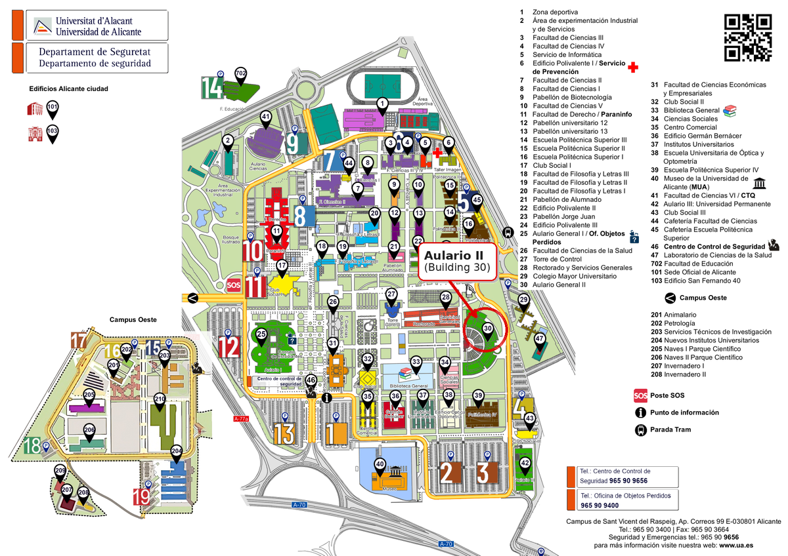

Alicante welcomes the Spain–Japan economic theory community.
The 10th Spain–Japan Meeting on Economic Theory will take place at the University of Alicante on 12–13 November 2026.
The meeting continues the longstanding collaboration between researchers in Spain and Japan working in economic theory, social choice and mechanism design.
The participant list, accommodation and travel information are available below. The detailed program and social events will be added as they are confirmed.
University of Alicante
University of Alicante
Organizers
Registration
Registration for the 10th Spain–Japan Meeting on Economic Theory is now open.
Workshop program
Each presentation is allocated 35 minutes, including questions.
Thursday, 12 November
10:00–11:45 · Social Choice and Voting
Coffee break · 11:45–12:15
12:15–13:25 · Strategic Information and Behavior
Lunch · 13:25–14:25
14:25–16:10 · Matching Markets
Coffee break · 16:10–16:40
16:40–17:50 · Strategy-Proof Allocation
Friday, 13 November
10:00–11:45 · Preference Aggregation and Welfare
Coffee break · 11:45–12:15
12:15–13:25 · Electoral Competition and Implementation
Lunch · 13:25–14:25
14:25–16:10 · Mechanism Design and Selection
Coffee break · 16:10–16:40
16:40–17:50 · Bargaining and Cooperative Allocation
Participants
Confirmed and expected participants in the 10th Spain–Japan Meeting on Economic Theory.
Where to stay
Participants can either stay close to the University in San Vicente del Raspeig, within walking distance of the campus, or stay in central Alicante and travel to the University by TRAM. For visitors wishing to enjoy Alicante in the evenings, the city-centre option is particularly convenient.
Near the University
Mediterráneo Suites
Very close to campusApartment-style suites in San Vicente del Raspeig, very close to the University and the TRAM.
Official website ↗Villa Universitaria
Walking distanceUniversity residence immediately next to the campus. Short stays are available for visitors attending conferences, seminars and workshops.
Official website ↗Universa Hotel
Walking distanceModern 3-star hotel in San Vicente del Raspeig, next to the University, with nearby TRAM and bus stops.
Official website ↗Alicante city centre
Eurostars Lucentum
Mercado TRAMBeside Alicante Central Market and especially convenient for the direct L2 TRAM trip to the University.
Official website ↗Occidental Alicante
Near MercadoCentral hotel on Tomás López Torregrosa, a short walk from Mercado and the L2 TRAM connection.
Official website ↗Eurostars Centrum Alicante
Near LucerosModern 4-star hotel close to the railway station and within walking distance of Plaza de los Luceros, the starting point of TRAM L2.
Official website ↗Getting to the University
From Alicante city centre
Arriving in Alicante
Aulario II · Room A2/E14
The workshop will take place in Room A2/E14, Aulario II (Building 30), first floor, at the University of Alicante campus.

Workshop Dinners
Thursday, 12 November · Restaurant CONVISTAS
Hotel Alicante Gran Sol, Rambla Méndez Núñez, 3, 03001 Alicante. The restaurant offers panoramic views over Alicante and the Mediterranean.
Restaurant information · Hotel Gran Sol ↗Friday, 13 November · Restaurante Dársena
Panoramis Life & Business, Avenida Perfecto Palacio de la Fuente, 6, Muelle de Poniente, Alicante. Located by the harbour.
Restaurant website ↗